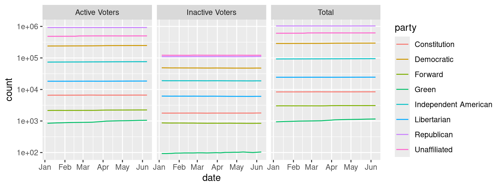

if (!file.exists("2026-political-party-registration.xlsx")) {
download.file("https://vote.utah.gov/wp-content/uploads/2026/01/2026-Utah-Political-Party-Registration-Data.xlsx", "2026-political-party-registration.xlsx", mode = "wb")
}Lab: Probability Distributions and Simulation
In this lab, we’ll look at what it would mean to take a representative sample of the population for the purposes of conducting election polling.
We’ll be using the 2026 Utah Political Party Registration Data, which can be obtained from https://vote.utah.gov/current-voter-registration-statistics/. The spreadsheet with voter registration by party and active status can be obtained using this link.
Setup
Data Source
The code chunk below downloads the spreadsheet and saves it to 2026-political-party-registration.xlsx in the current working directory, if the file does not already exist. If you like to have neat file structures, now is a good time to place this quarto file into a folder called “sampling-lab” before you run the code. Then, open RStudio and the quarto file within whatever folder you created and run the code.
Data Cleaning
The next step is to read the data in from the spreadsheet and do a bit of cleaning and formatting.
library(readxl)
library(dplyr)
Attaching package: 'dplyr'The following objects are masked from 'package:stats':
filter, lagThe following objects are masked from 'package:base':
intersect, setdiff, setequal, unionlibrary(tidyr)
library(lubridate)
Attaching package: 'lubridate'The following objects are masked from 'package:base':
date, intersect, setdiff, unionlibrary(stringr)
utah_reg <- read_xlsx("2026-political-party-registration.xlsx", skip = 1, col_names = F)New names:
• `` -> `...1`
• `` -> `...2`
• `` -> `...3`
• `` -> `...4`
• `` -> `...5`
• `` -> `...6`
• `` -> `...7`
• `` -> `...8`
• `` -> `...9`
• `` -> `...10`
• `` -> `...11`
• `` -> `...12`
• `` -> `...13`
• `` -> `...14`
• `` -> `...15`
• `` -> `...16`
• `` -> `...17`
• `` -> `...18`
• `` -> `...19`
• `` -> `...20`
• `` -> `...21`
• `` -> `...22`
• `` -> `...23`
• `` -> `...24`
• `` -> `...25`
• `` -> `...26`# This reads in just the date row and formats the dates properly
utah_reg_dates <- read_xlsx("2026-political-party-registration.xlsx",
n_max = 1, col_names = F, col_types = 'date') |>
unlist() |>
as.POSIXct() |>
round_date("day") |>
as.character()New names:
• `` -> `...1`
• `` -> `...2`
• `` -> `...3`
• `` -> `...4`
• `` -> `...5`
• `` -> `...6`
• `` -> `...7`
• `` -> `...8`
• `` -> `...9`
• `` -> `...10`
• `` -> `...11`
• `` -> `...12`
• `` -> `...13`
• `` -> `...14`
• `` -> `...15`
• `` -> `...16`
• `` -> `...17`
• `` -> `...18`
• `` -> `...19`
• `` -> `...20`
• `` -> `...21`
• `` -> `...22`
• `` -> `...23`
• `` -> `...24`# There is an extra column here corresponding to a change in state-recognized parties.
# We don't care about it so let's give it a name that's appropriate.
utah_reg_dates[is.na(utah_reg_dates)] <- "eliminate"
# Then we set names, including two columns we ignored until now.
utah_reg <- setNames(utah_reg, c("status", "party", utah_reg_dates))The code below performs the following steps:
- Creates a status column and fills in the values active, inactive, and total.
- Reads in the dates as characters
# Fill in status column
utah_reg <- utah_reg |>
fill(status, .direction = "down") |>
pivot_longer(-c(status, party, eliminate), names_to = "date", values_to = "count") |>
filter(party != "No Labels") |>
select(-eliminate) |>
filter(!str_detect(party, "Total")) |>
mutate(date = ymd(date))If all of this data cleaning succeeded, we should be able to get a plot of voters by status and party through 2026.
library(ggplot2)
utah_reg |>
ggplot(aes(x = date, y = count, color = party)) + geom_line() +
scale_y_log10() +
facet_wrap(~status)
At this point, we’ll discard the inactive voters (people who haven’t voted in 2 elections AND didn’t respond to a postcard from the state asking for verification at the address on file) and just work with the active voters. Inactive voters have often moved, and some states don’t have a good process for removing them from the voter rolls, even when/if they register in another state.
utah_reg <- filter(utah_reg, status=="Active Voters") |>
select(-status)Registration Evolution over Time
Party Changes
Utah’s spreadsheet of voter registration is interesting because it seems to contain weekly updates. As we saw in Figure 1, it is not necessarily true that very many changes happened over this period, but that the data is provided allows us to check to see whether we need to be cautious using registered voters as a sampling frame (a list of all people in the population who can be part of a sample) and whether we specifically need to worry about when the sampling frame was generated.
Of course, June 8 2026 is before the vast majority of voter registration drives for the fall 2026 election would have begun, so it is not clear whether this data is actually all that useful – we would want to compare to trends in e.g. 2024 and 2022, where hopefully there is full data available, in order to be sure.
As a sanity check, we’ll compute the standard deviation of the number of voters registered in each party over this period.
Uncomment, and then fill in the code below to complete this task.
# utah_reg_time <- utah_reg |>
# group_by(##...##) |>
# summarize(mean = ##...##,
# sd = ##...##,
# pct = (max(count)-min(count))/(mean(count))) |>
# ungroup() |>
# arrange(desc(##...##))
#
# head(utah_reg_time)Have any parties seen significant changes in their registration? Why or why not?
Your answer here
Which measure did you use, sd or pct? Why?
Your answer here
Significant Parties
Of course, not all minor parties are likely to be reflected in a statistical poll, which typically includes at most 3000 people to represent an entire state. Using only the most recent date, calculate the expected number of people from each party who would be in a representative sample of 3000 people (this is 3000 * probability of party).
# utah_party_sample <- utah_reg |>
# filter(date == max(date)) |>
# mutate(prop = ##...##,
# sample = ##...##)How much would a 22% change in the proportion of people registered for the Green party actually translate to in this sample? Will it have a significant impact on the results?
Your answer here – you don’t have to do more calculations, just talk about what the calculations you have done are likely to mean.
It can be helpful to create a data frame that can be directly sampled from. utah_party_sample is an aggregated data frame, but we might prefer to assemble a sampling frame that more closely resembles actual voter data, where each individual has an ID, an address, and a phone number. We don’t have that kind of personal information, but we can make a data frame that has a similar form, assigning each voter an id.
# utah_voters <- utah_party_sample |>
# select(party, count) |>
# uncount(count) |>
# mutate(id = sample(1:n(), size = n(), replace = F))Constructing a Poll
library(infer)Single Poll Sample
Using the utah_party_sample object, let’s construct a sample for a poll that The Onion (America’s Finest News Source) wants to conduct in Utah.
# set.seed(20261103) # Election day 2026
# poll_sample <- utah_voters |>
# sample_n(size = 3000, replace = F)We can tabulate the essential information from this poll sample by counting by party:
# poll_summary <- poll_sample |>
# group_by(party) |>
# count()In some cases, it might be easier to look at this in wide form, where each poll replicate is a single row.
# poll_sum_wide <- poll_summary |>
# pivot_wider(names_from = party, values_from = n)Multiple Poll Samples
Using the rep_sample_n() function in the infer package, let’s generate 100 possible polls which sample 3000 Utah registered voters.
# set.seed(20261103) # Election day 2026
# possible_polls <- utah_voters |>
# rep_sample_n(size = 3000, replace = F, reps = 100)Then, we can mimic the cleaning code above, grouping by replicate and party, to get a single-row summary of sampled people from every party.
# possible_polls_sum <- possible_polls |>
# group_by(replicate, party) |>
# count() |>
# pivot_wider(names_from = party, values_from = n)In samples where no Green party members were included, there is an NA value instead. How many of those samples are there? Write code using possible_polls_sum to determine how many samples include no Green party members.
## Replace this with your code solving the above problemWhat is the maximum number of Green party members sampled in a particular hypothetical poll? How many polls sample that many Green party members?
## Replace this with your code solving the above problemWould you have concerns about the statistical validity of any poll that included 7 members of the Green party? Would this be a non-representative sample? Why, or why not?
Your answer here
In order to generalize the results of a sample to the population, we must make the argument that the sample is representative of the population that we want to generalize to. Some polls want to generalize to “likely voters”, while others poll all registered voters. Does this distinction matter? Which type of poll would you trust more?
Your answer here